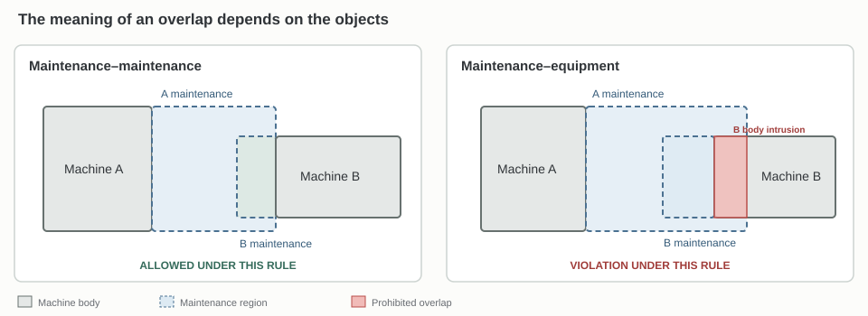

Verification Before Optimization
Turning ambiguous engineering rules into executable decision criteria.
November 2026 · Tsung-Yen Tsai
“Keep at least 80 cm between two machines.”
That sounds precise—until two implementations disagree on whether the same layout passes.
Are we measuring the gap between simplified machine footprints or the outermost physical parts? Do protruding components count? How should measurement tolerances and rounding be handled near the 80 cm threshold?
These questions may seem minor in a requirement document, but each answer changes which layouts the software considers acceptable. An optimizer can work exactly as designed and still solve a different problem from the one engineers intended.
I learned this while building an automated industrial equipment layout system. But we didn't start with verification first. We learned why it mattered as the project progressed.
A rule on paper is not yet a rule in software
Our initial goal was to generate better equipment layouts automatically. We spent considerable effort turning engineering requirements into executable rules, building placement and verification capabilities, and finding ways to generate layouts that satisfied those requirements.
The difficulty was that many of the rules were written in natural language. Translating them into software required decisions that were not always obvious from the documents.
Another example involved maintenance regions around equipment.
Under the rules used in our layout work, maintenance regions could overlap one another, but they could not overlap another machine's physical body or certain physical obstacles.
Consider two maintenance regions that overlap without extending into either machine body. A checker that treats every overlap as a violation would reject this arrangement—even though it satisfies the maintenance-region rule.
The intersection test is correct. The interpretation of the engineering rule is not.

The checker needs to know what the shapes represent, not just whether they intersect. That changes the problem from generic collision detection to executing domain-specific engineering rules.
Verification is also a way to understand requirements
As development progressed, we also used the verifier to check existing customer layouts.
This revealed something that was not always obvious from the written requirements. Some results did not match what engineers expected, while parts of existing designs did not necessarily conform to the general rules as we understood them.
A flagged violation did not automatically mean the existing design was wrong. Perhaps our interpretation was incorrect, the geometry was incomplete, or the layout contained an approved exception—or a genuine violation.
An existing design is evidence, not automatic ground truth.
Comparing our rule implementation with those designs helped expose disagreements that might otherwise have remained hidden inside the optimizer.
Looking back, I wish we had done more of this earlier. Rather than spending so much effort on generating better layouts, we could have used a simpler verifier to test our interpretation of the rules against existing designs first.
I would also turn those disagreements into small, controlled test cases. Instead of reviewing an entire factory, we could isolate one question at a time: two machines separated by exactly 80 cm, a protruding component, overlapping maintenance regions, or a maintenance region touching a wall.
The useful artifact would not just be the geometry. It would be the expected result, reviewed by engineers, together with the reason it should pass or fail. If no one can agree on that result, the ambiguity should remain visible rather than being hidden inside the implementation.
That experience changed how I think about verification. Verification is not only a way to check what we generate. It is also a way to discover whether we understood what we were asked to generate.
One rule, different jobs
The maintenance-region rule eventually served two purposes in our system: layout verification and placement feasibility.
In verification, the system checks whether a prohibited spatial relationship exists in a layout. During placement, the same requirement helps determine which candidate positions are allowed before they are selected.
These are different computational jobs built around the same engineering requirement.
But there is another question: among valid layouts, which one is better?
That is evaluation, and it requires a separate definition of quality.
“At least 80 cm” tells us which layouts are admissible. It does not tell us whether 81 cm is better than 120 cm.
A compact layout may save floor space. A wider gap may improve accessibility. Preferences for compactness, alignment, or equipment grouping need their own explicit criteria.
A hard constraint does not automatically become an optimization objective.
Without this distinction, a system can satisfy every rule and still produce poor designs—or improve a numerical score without improving anything engineers actually care about.
Shared meaning does not require identical computation
Even when different parts of the system follow the same engineering rule, they may need different implementations.
A verifier might check detailed polygons directly. A placement optimizer might use simplified geometry or precomputed feasibility masks to search faster.
These differences can be reasonable, but they come with trade-offs.
For example, a conservative search approximation may reject a placement that the final verifier would accept. This can make search cheaper, but it also removes some valid solutions from consideration. Candidates that survive search still need to pass the accepted verification standard.
The more dangerous case is when different implementations silently adopt different meanings of the same rule.
Or when the checker and optimizer share the same mistaken interpretation. Their agreement proves very little if both are measuring the wrong thing.
We do not need identical computations everywhere. We need a shared engineering meaning, clear boundaries around approximations, and tests that can reveal when an implementation no longer matches the agreed rule.
What I would do differently
If I were starting a similar project today, I would bring verification into the discussion much earlier.
Not because every rule must be finalized before we begin generating layouts. Engineering requirements will continue to evolve.
But before investing heavily in optimization, I would want a small, executable set of rules that we could test against existing designs and review with engineers.
That would help us distinguish three different problems: whether we understood the requirements, whether our software implemented them correctly, and whether the optimizer could find better solutions under those requirements.
We eventually learned that improving the optimizer was not always the most important next step. Sometimes, agreeing on how to judge its output mattered much more.
Verification gives optimization a clearer feasible space, while explicit preferences define what the search should improve. Neither guarantees that every engineering rule is correct, but both make our assumptions easier to inspect and revise.
Before asking a search algorithm for better layouts, I want to know what it is allowed to accept—and why.